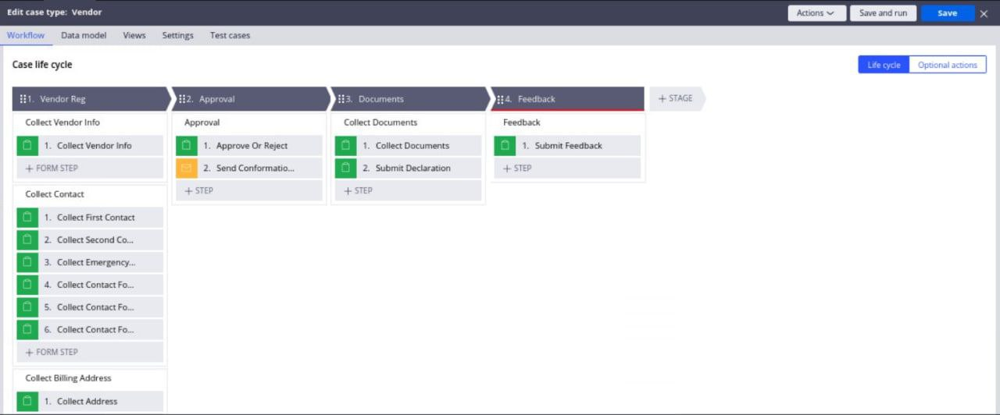

RECRUITMENT PLATFORM THROUGH PEGA

Through Pega 8, I have automated the Recruitment process of the OJP organization. So that, Any Jobseeker will be able to login to this application and apply for the job. For these, I have created three modules: one for Job applicants, for Manager, and lastly for the Interviewer. Jobseekers can view the open positions available through the platform and can select a suitable position to apply for. The Job application case captures the personal details, educational qualifications, work experiences, and skills. Once the information is submitted, the case is routed to the manager for approval. The manager can approve or reject the application. In any case, an email will be sent to the job seeker informing him of the manager's decision.
If approved, the date of the interview will be fixed by the manager and it is communicated to the candidate by email. The interview child case will be started on the day of the interview. The interviewer will view the details of the candidate, conduct the interview, and either selects or rejects the candidate. The result of the interview (Selected/Rejected) is sent back to the Parent case. The parent case will wait till the child case is resolved. In the parent case, the manager will verify the result of the interview, and the mail will be sent to the selected candidate.